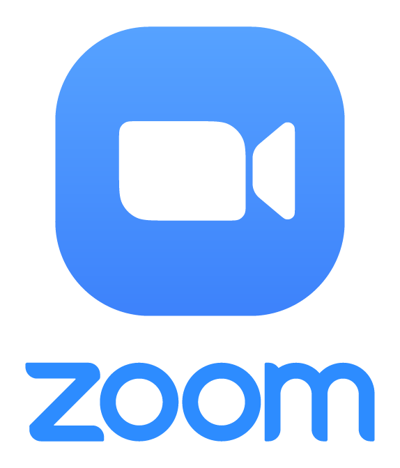
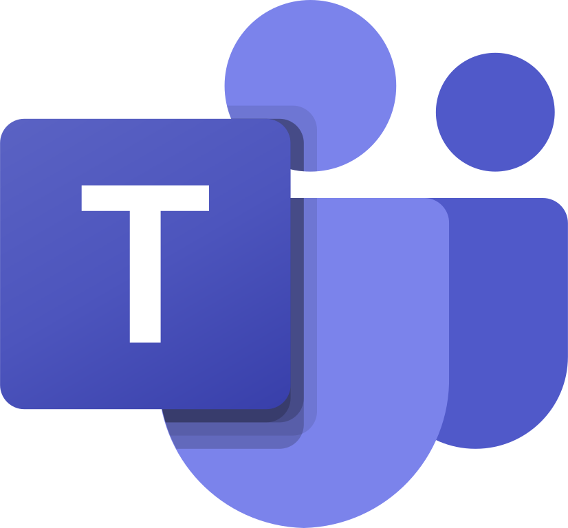

Հիմնական ուսումնական հարթակները
Սեղմեք համապատասխան հարթակի անունը՝ տեսնելու մանրամասն ինֆորմացիան։
Zoom – Տեսազանգերի հարթակ 
Նպատակ: Անվտանգ և արդյունավետ առցանց հանդիպումներ, դասընթացներ և սեմինարներ կազմակերպելու համար։
Ուսումնական օգտագործումը:
- Մանկավարժները կարող են դասեր անցկացնել առցանց՝ տեսադասերի միջոցով։
- Սովորողները կարող են մասնակցել վիրտուալ դասերին, հարցեր տալ և ինտերակտիվ մասնակցություն ունենալ։
- Zoom-ի հնարավորություններն են screen sharing (էկրանի կիսած) և breakout rooms (պարտադիր խմբային քննարկումներ)։
Առավելություններ: Անհատականացված ուսուցում, հեշտ ինտեգրում LMS համակարգերի հետ, առցանց հարմարավետություն։
Zoom հարթակի օգտագործման պաշտոնական ուղեցույց
Այս ուղեցույցը կօգնի ձեզ արագ կողմնորոշվել Zoom-ի հիմնական գործառույթներում:
1. Ներբեռնում և գրանցում
- Ներբեռնում: Այցելեք zoom.us/download և ներբեռնեք "Zoom Desktop Client"-ը համակարգչի կամ հավելվածը հեռախոսի համար:
- Մուտք: Սեղմեք Sign Up Free՝ նոր հաշիվ բացելու համար, կամ Sign In, եթե արդեն ունեք հաշիվ (կարող եք օգտագործել Google կամ Facebook հաշիվները):
2. Միացում հանդիպմանը (Join)
Հանդիպմանը միանալու համար կա երկու հիմնական եղանակ.
- Սեղմել հրավիրողի ուղարկած հղմանը (Invitation Link):
- Բացել Zoom-ը, սեղմել Join և մուտքագրել Meeting ID-ն ու գաղտնաբառը (Passcode):
3. Հանդիպման կառավարման գործիքներ
| Գործիք | Նկարագրություն |
|---|---|
| Mute / Unmute | Միացնել կամ անջատել ձեր խոսափողը: |
| Start / Stop Video | Կառավարել տեսախցիկի միացումը: |
| Share Screen | Ցուցադրել ձեր էկրանի պարունակությունը մասնակիցներին: |
| Chat | Գրավոր հաղորդագրություններ ուղարկել բոլորին կամ անհատապես: |
| Reactions | Բարձրացնել ձեռք (Raise Hand) կամ արտահայտել էմոցիաներ: |
4. Zoom AI Companion
Ժամանակակից Zoom-ն առաջարկում է AI Companion գործիքը, որը կարող է ամփոփել հանդիպման բովանդակությունը և առանձնացնել կարևոր կետերը:
5. Հանդիպման ավարտ
Եթե դուք մասնակից եք, սեղմեք Leave: Եթե կազմակերպիչն եք (Host), սեղմեք End և ընտրեք End Meeting for All:
6. Լրացուցիչ օգնություն և աջակցում
Եթե ունեք տեխնիկական խնդիրներ կամ ցանկանում եք ավելի խորությամբ ուսումնասիրել հարթակը, այցելեք Zoom-ի պաշտոնական ռեսուրսը.
Zoom Support Center Teams – Համագործակցության գործիք 
Նպատակ: Խումբային համագործակցության և հաղորդակցության կազմակերպում՝ թե՛ ուսումնական, թե՛ աշխատավայրային միջավայրում։
Ուսումնական օգտագործումը:
- Մանկավարժները կարող են ստեղծել առանձին խմբեր դասերի կամ դասարանների համար։
- Սովորողները կարող են համագործակցել, քննարկումներ վարել, փաստաթղթեր կիսել և միասին նախագծեր կատարել։
- Teams-ն ապահովում է ինտեգրում Office 365-ի հետ՝ Word, Excel, PowerPoint ֆայլերի անմիջական խմբագրում։
Առավելություններ: Արագ կապ մանկավարժների և սովորողների միջև, բոլոր ուսումնական նյութերը մեկ հարթակում, զեկույցներ և առաջադրանքների կառավարում։
Microsoft Teams հարթակի օգտագործման ուղեցույց
Microsoft Teams-ը համագործակցության հզոր հարթակ է, որը միավորում է չաթը, տեսազանգերը և ֆայլերի փոխանակումը:
1. Ինչպես սկսել
- Ներբեռնում: Այցելեք Microsoft Teams Download էջը համակարգչի կամ հեռախոսի համար:
- Մուտք: Օգտագործեք ձեր Microsoft հաշիվը (օրինակ՝ @outlook.com) կամ ձեր կազմակերպության կողմից տրամադրված էլ. փոստը:
2. Հիմնական բաժինները (Sidebar)
- Activity (Գործողություններ): Տեսնել բոլոր ծանուցումները, պատասխանները և բաց թողնված զանգերը:
- Chat (Չաթ): Անհատական կամ խմբային նամակագրություն գործընկերների հետ:
- Teams (Թիմեր): Տեսնել այն խմբերը, որոնց անդամակցում եք և մասնակցել քննարկումներին:
- Calendar (Օրացույց): Պլանավորել հանդիպումներ կամ միանալ արդեն նշանակվածներին:
3. Տեսահանդիպումների կառավարում
| Կոճակ / Գործիք | Նկարագրություն |
|---|---|
| Mic / Camera | Միացնել կամ անջատել ձայնը և տեսախցիկը: |
| Share (Էկրանի ցուցադրում) | Կիսվել էկրանով, պատուհանով կամ PowerPoint պրեզենտացիայով: |
| Raise Hand (Ձեռք բարձրացնել) | Հայտնել զեկուցողին, որ հարց ունեք՝ առանց ընդհատելու: |
| Breakout Rooms | Մասնակիցներին բաժանել փոքր աշխատանքային խմբերի (կազմակերպչի համար): |
4. Ֆայլերի հետ աշխատանք
Teams-ը ինտեգրված է OneDrive-ի և SharePoint-ի հետ: Դուք կարող եք ուղարկել ֆայլեր հենց չաթում, և մի քանի հոգով միաժամանակ խմբագրել Word կամ Excel փաստաթղթերը:
5. Պաշտոնական աջակցություն
Microsoft Teams Support Center© Microsoft Teams Help Guide
Moodle – Ուսումնական կառավարման համակարգ (LMS)
Նպատակ: Առցանց ուսուցման ամբողջական կառավարման և կազմակերպման հարթակ։
Ուսումնական օգտագործումը:
- Դասերը կարող են ստեղծվել առցանց՝ նյութերով, տեսանյութերով, տեքստային առաջադրանքներով։
- Սովորողները կարող են կատարել առաջադրանքներ, մասնակցել թեստերին և ստանալ գնահատականներ։
- Մանկավարժները կարող են հետևել ուսանողների առաջընթացին և կարգավորել դասացուցակները։
Առավելություններ: Համապարփակ ուսուցում, անհատականացված առաջընթացի վերահսկում, լայն հնարավորություններ դասերի կառավարմանը և գնահատմանը։
Moodle Ուսումնական հարթակի օգտագործման ուղեցույց
Moodle-ը աշխարհի ամենատարածված ուսուցման կառավարման համակարգն է (LMS), որը հնարավորություն է տալիս իրականացնել առցանց դասընթացներ:
1. Մուտք և անձնական էջ (Dashboard)
- Մուտք: Յուրաքանչյուր ուսումնական հաստատություն ունի իր սեփական հղումը (օրինակ՝ moodle.university.am): Մուտք գործեք ձեր տրամադրված օգտանունով և գաղտնաբառով:
- Dashboard: Սա ձեր գլխավոր էջն է, որտեղ տեսնում եք ձեր բոլոր ակտիվ դասընթացները և առաջիկա վերջնաժամկետները (Deadlines):
2. Դասընթացի կառուցվածքը
Յուրաքանչյուր դասընթաց սովորաբար բաժանված է շաբաթների կամ թեմաների, որտեղ կգտնեք.
- Resources: Դասախոսությունների տեքստեր, PDF ֆայլեր, տեսանյութեր կամ հղումներ:
- Activities: Ինտերակտիվ բաժիններ, ինչպիսիք են թեստերը, ֆորումները և առաջադրանքները:
3. Առաջադրանքների հանձնում (Assignments)
| Գործողություն | Նկարագրություն |
|---|---|
| Add Submission | Սեղմեք այս կոճակը՝ ձեր ֆայլը (Word, PDF և այլն) վերբեռնելու համար: |
| Status | Ստուգեք՝ արդյոք աշխատանքը հանձնված է (Submitted for grading), թե դեռ սևագիր է (Draft): |
| Quizzes (Թեստեր) | Ժամանակով սահմանափակված հարցաշարեր, որոնք հաճախ ավտոմատ ստուգվում են համակարգի կողմից: |
4. Հաղորդակցություն
- Messages: Օգտագործեք ներքին նամակագրությունը դասախոսների կամ կուրսակիցների հետ կապ հաստատելու համար:
- Forums: Մասնակցեք թեմատիկ քննարկումներին՝ թողնելով մեկնաբանություններ կամ հարցեր:
5. Պաշտոնական աջակցություն և ռեսուրսներ
Moodle-ի պաշտոնական փաստաթղթերը: Moodle Documentation (All Versions)Խորհուրդ. Ներբեռնեք Moodle App-ը App Store-ից կամ Play Store-ից՝ դասընթացներին հեռախոսով հետևելու համար:
© Moodle LMS Armenian Guide
Dropbox – Ֆայլերի պահպանում ամպում 
Նպատակ: Ֆայլերի, փաստաթղթերի և մեդիա նյութերի անվտանգ պահպանում և կիսում։
Ուսումնական օգտագործումը:
- Մանկավարժները կարող են կիսել ուսումնական նյութերը և ներկայացնել ուսանողներին հասանելի ֆայլերը։
- Սովորողները կարող են ներկայացնել աշխատանքները և նախագծերը առցանց՝ առանց ֆիզիկական փոխանցման անհրաժեշտության։
- Dropbox-ը աջակցում է տարբեր ֆայլերի տեսակների՝ PDF, Word, Excel, PowerPoint, տեսանյութեր և նկարներ։
Առավելություններ: Հեշտ կիսում, անվտանգ պահպանում, ցանկացած սարքից հասանելիություն, միասնական ֆայլերի կառավարմամբ աշխատանք։
Dropbox ամպային տիրույթի օգտագործման ուղեցույց
Dropbox-ը ֆայլերի պահպանման և համաժամանակեցման (sync) հարթակ է, որը թույլ է տալիս մուտք գործել ձեր տվյալներին ցանկացած սարքից:
1. Ներբեռնում և տեղադրում
- Dropbox Desktop: Ներբեռնեք հավելվածը dropbox.com/install հասցեից: Այն կստեղծի հատուկ թղթապանակ ձեր համակարգչում:
- Mobile App: Տեղադրեք հավելվածը հեռախոսի վրա՝ լուսանկարները ավտոմատ կերպով ամպում պահելու համար:
2. Ֆայլերի ավելացում և կառավարում
Ֆայլեր ավելացնելու համար կարող եք պարզապես քաշել և գցել (Drag & Drop) դրանք Dropbox թղթապանակի մեջ կամ օգտվել վեբ տարբերակից.
- Upload: Վերբեռնել առանձին ֆայլեր կամ ամբողջական թղթապանակներ:
- Create: Ստեղծել նոր Word, Excel կամ Google Docs փաստաթղթեր հենց Dropbox-ի մեջ:
3. Ֆայլերով կիսվելը (Sharing)
| Գործողություն | Նկարագրություն |
|---|---|
| Copy Link | Ստեղծել հղում, որով ցանկացած մարդ կարող է դիտել կամ ներբեռնել ֆայլը: |
| Invite to Folder | Հրավիրել գործընկերներին խմբագրելու թղթապանակի պարունակությունը: |
| File Requests | Ուղարկել հարցում այլ մարդկանց, որպեսզի նրանք ֆայլեր վերբեռնեն ձեր Dropbox (նույնիսկ եթե նրանք հաշիվ չունեն): |
4. Dropbox Paper
Dropbox Paper-ը համատեղ աշխատանքի համար նախատեսված տարածք է, որտեղ թիմերը կարող են միաժամանակ գրել տեքստեր, ավելացնել առաջադրանքներ և մեկնաբանել միմյանց աշխատանքը:
5. Պաշտոնական աջակցություն
Dropbox Help Center© Dropbox Armenian Quick Start Guide